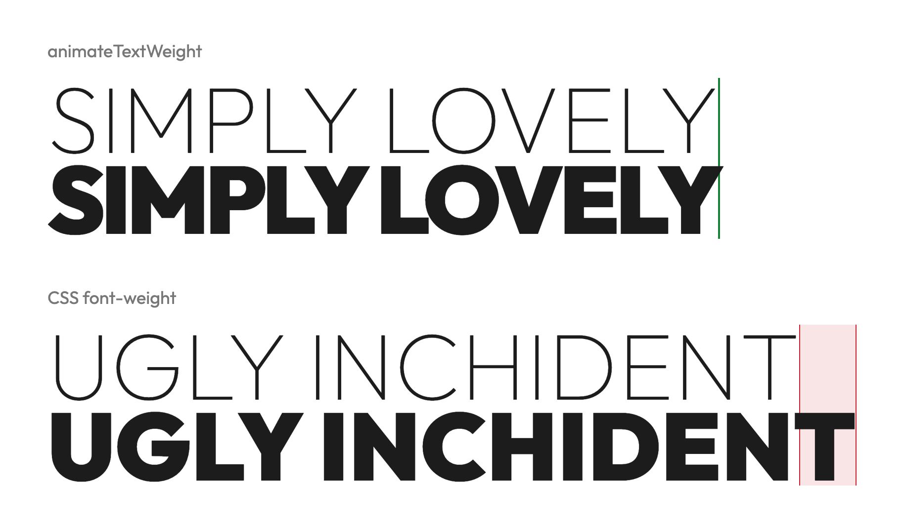

| element | io | side | wave from | x | mid | progress |
|---|
Use this for headlines, buttons and navigations to create stunning typographic animations. It animates the font-weight of a variable font while keeping the overall width so things don't randomly shift around.

A variable font gets wider as it gets bolder. If you animate font-weight on its own, each line
grows as the weight goes up, and the text around it moves. animateTextWeight measures each rendered line at the
start and end weight and 9 steps between. At each of them it holds the line at its start width: with
letter-spacing in line mode, and with the width of each character box in character mode.
Pick any variable font at Google Fonts, then paste the URL from its embed code.
Install it from npm.
npm install animate-text-weight
Add it to your website or web app.
import "animate-text-weight/style.css";
import { init } from "animate-text-weight";
init();
// If your bundler does not handle CSS imports, link `node_modules/animate-text-weight/src/animateTextWeight.css` directly.
Add your CSS styling.
@import url("https://fonts.googleapis.com/css2?family=Outfit:wght@100..900&display=swap");
.nav a {
font-family: "Outfit", sans-serif; /* a variable font */
--animate-weight-from: 300;
--animate-weight-to: 700;
}
.nav a:hover {
--animate-weight: true;
}
The script then wraps each line in a span. On hover that span animates from 300 to 700 and keeps its width.
<a href="/">Foobar</a> <!-- becomes --> <a href="/"> <span class="animate-text-weight-line animate-text-weight-unit">Foobar</span> </a>
Every available option:
.nav a {
font-family: "Outfit", sans-serif;
--animate-weight-from: 300;
--animate-weight-to: 700;
--animate-weight-by: character;
--animate-weight-delay: 20ms;
--animate-weight-direction: pointer;
--animate-weight-duration: 300ms;
--animate-weight-easing: linear;
--animate-weight-color-from: #1c1c1c;
--animate-weight-color-to: #6f4e37;
}
Then turn the animation on with --animate-weight: true, on the element itself or on any ancestor:
/* animate all elements that have a --animate-weight-to */
.nav {
--animate-weight: true;
}
/* or turn on specific elements only */
.nav a:hover,
.nav a[aria-current="page"] {
--animate-weight: true;
}
The animation is shown if --animate-weight-to is set and differs from its current weight (vanilla
font-weight or --animate-weight-from).
Set it on the element that holds the text itself. In <a><span>Home</span></a>,
set it on the span, not the a.
Plain letter-spacing works and is kept. So do text-transform, text-align
(except justify), font-variant, font-feature-settings, right-to-left text and vw font sizes.
| Property | Value | Default | Required |
|---|---|---|---|
--animate-weight-from | Weight at rest. | The element's font-weight | no |
--animate-weight-to | Weight when on. | none | yes |
--animate-weight | true or false. Inherited, so an ancestor can set it. | false | no |
--animate-weight-by | line animates each line as one unit. character animates each character on its own. | line | no |
--animate-weight-delay | How long each unit waits after the one before it. Use it with character for a wave across the text, or with line for a wave down a block. Start with 5-20ms by character, 100ms+ by line. | 0s | no |
--animate-weight-direction | Where the wave starts. See below. | start | no |
--animate-weight-duration | How long one unit takes to go from one weight to the other. With prefers-reduced-motion: reduce, duration and delay are set to 0s and the weight changes at once. | 300ms | no |
--animate-weight-easing | Timing function of the wave. | linear | no |
--animate-weight-direction| Value | Wave starts at ... |
|---|---|
start | the start of the text. In right-to-left text that is the right side. In line mode it is the first line. |
end | the other end. |
pointer | the side the pointer came in from, and the weight goes back from the side the pointer left by. The pointer only sets the direction. You still need --animate-weight: true on :hover or another state to turn it on. |
scroll | the start when the page scrolls down, and the end when it scrolls up. |
pointer scroll | whichever of the two moved last. |
The script splits the element into one span per line, and in character mode into one span per character. Inline styles are left out here:
<!-- before -->
<a>Foobar</a>
<!-- by line -->
<a>
<span class="animate-text-weight-line animate-text-weight-unit">Foobar</span>
</a>
<!-- by character -->
<a>
<span class="animate-text-weight-line">
<span class="animate-text-weight-char animate-text-weight-unit">F</span>
<span class="animate-text-weight-char animate-text-weight-unit">o</span>
<span class="animate-text-weight-char animate-text-weight-unit">o</span>
...
</span>
</a>
Lines are fixed after measuring. They can get wider or narrower but do not rewrap until the next measurement.
font-variation-settings with "wght" overrides the weight, so nothing animates. Use font-weight.text-align: justify loses its stretch, because lines are fixed after measuring.This is enough for most pages. Call it once. It waits for the fonts, measures every animated element on the page, and measures them again when the window width changes.
init();
Measure the element again after you add it or replace its text.
const link = document.createElement("a");
link.textContent = "Foobar";
nav.append(link);
calibrate(link);
Measure everything under the new view's root. Those elements are measured again on resize too.
calibrateAll(document.querySelector("main"));
vh font sizes or a font that loads late, call calibrate(element).
Set --animate-weight-color-from or --animate-weight-color-to to change color along
with the weight. If you omit one or the other, it falls back to currentColor and uses whatever
color your own CSS already applies to that text:
.nav a {
--animate-weight-color-from: #1c1c1c;
--animate-weight-color-to: #c8102e;
}
The color follows each unit's weight, so it uses the same duration, easing, delay, and direction.
Each span.animate-text-weight-unit has the CSS variable --animate-weight-progress, which
goes from 0 at --animate-weight-from to 1 at
--animate-weight-to. Use it in any CSS property to sync that property to the weight animation:
/* change opacity from 60% to 100% */
.nav a .animate-text-weight-unit {
opacity: calc(0.6 + 0.4 * var(--animate-weight-progress));
}
The CSS variable is set on the unit and is not inherited. Make sure to target .animate-text-weight-unit
itself, not the original element (.nav a). In character mode each character has its own
span.animate-text-weight-unit with its own value.
An optional extra marks the nav link of the section in the middle of the screen with
aria-current="true". A jump passes every section in between, one at a time, so one wave runs
through the nav. Each step waits until the wave has crossed that link: --animate-weight-delay once
per unit.
import { waveNav } from "animate-text-weight/wave-nav";
waveNav(document.querySelectorAll(".nav a"));
.nav a[aria-current="true"] {
--animate-weight: true;
}
Each link's section is the element its href="#id" names. Pass
{ linkClass: "active" } or { sectionClass: "active" } to also toggle a class on
the current link or its section.
waveNav returns a stop() function that removes its listeners.
Thanks for using animateTextWeight.
It is free under the MIT license: use it in any project, personal or commercial, change it and share it. Keep the license text with the code. It comes with no warranty.
Found a bug or want a feature? Open an issue or, better, send a pull request.
If you appreciate the typographic beauty of animated text that doesn't break your design, buy me a coffee.
I really enjoy seeing other designers' work and appreciate it if you send me a link to any project that uses animateTextWeight.